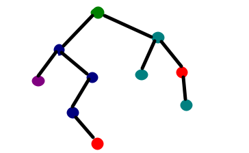

Klasifikasi Menggunakan Decision Tree di R¶

Classification Tree sangat populer akhir-akhir ini. Jika Anda tidak pernah mengenalnya, saya yakin kalian pasti tertarik pada Classification Tree. Model ini memungkinkan kalian untuk mengklasifikasikan pengamatan sesuai dengan kualitas pengamatan, yang disebut fitur. Intinya, semua model ini terdiri dari pembuatan pohon, di mana masing-masing node bertindak sebagai router. Contohnya jika kalian memasukkan jamur ke akar pohon, dan kemudian, tergantung pada fitur jamur (ukuran, titik, warna, dll.), kalian akan mengikuti batang sampai ranting yang berbeda-beda untuk sampai ke daun, sehingga baru diketahui kelas jamur kalian, yaitu apakah itu bisa dimakan atau tidak.
Ada dua langkah yang berbeda dalam menggunakan model seperti itu: pelatihan (yaitu membangun pohon), dan memprediksi (yaitu menggunakan pohon untuk memprediksi apakah jamur yang diberikan beracun). Contoh ini memberikan kode untuk melakukan keduanya, dengan menggunakan salah satu algoritma awal untuk mengklasifikasikan data sesuai dengan fitur diskrit: Interative Dichotomiser 3 atau sering disebut ID3. Ini cocok untuk contoh ini, tapi tentu saja saat ini ada algoritma yang lebih rumit dan keren lainnya.
Apa sih Interative Dichotomiser 3¶
Algoritma Decision Tree ID3 menurutku sih, algoritma yang cukup bersemangat dan istiqomah, karena dia meleakukan pencarian secara menyeluruh pada semua kemungkinan pohon keputusan tanpa tertinggal satu pun. Balik ke jamur tadi. Jadi selama tahap prediksi, setiap node mengarahkan jamur kita sesuai dengan fitur. Tapi bagaimana kita memilih fitur itu? Haruskah kita pertama-tama memisahkan himpunan kita menurut warna atau ukuran? Di situlah model klasifikasi berbeda.
Di ID3, kita memilih, di setiap node, fitur dengan Gain Informasi tertinggi. Singkatnya, ini adalah fitur yang membagi sampel di subset yang mungkin paling murni. Misalnya, dalam kasus jamur, titik bisa jadi fitur yang lebih masuk akal daripada organik. Lets Practice !
Pertama kalian harus install dulu packages "data.tree" yah, tentunya selanjutnya jalankan. Kita coba menggunakan data yang sudah ada di R yaitu mushroom.
install.packages("data.tree") library(data.tree)
library(data.tree)
Nah. sebetulnya untuk kasus ini sudah dibahas di cran.r-project.org. Untuk memudahkan kalian, berikut saya bagikan script yang ada di cran R:
Pertama dibuat dulu nih beberapa fungsi, yang ini untuk mengambil panjang data yang telah unik.
IsPure <- function(data) { length(unique(data[,ncol(data)])) == 1 }
Entropi adalah ukuran kemurnian dataset. Rumusnya kayak gini (please jangan tanyakan rumusnya dari mana, hehe)
Entropy <- function( vls ) { res <- vls/sum(vls) * log2(vls/sum(vls)) res[vls == 0] <- 0 -sum(res) }
Secara matematis, Gain Informasi IG didefinisikan sebagai: $$ \mathrm{IG}(\mathrm{T}, \mathrm{a})=\mathrm{H}(\mathrm{T})-\sum_{\text { vevals(a)}} \frac{\left|\left{\mathrm{x} \in \mathrm{T} | \mathrm{x}{\mathrm{a}}=\mathrm{v}\right}\right|}{|\mathrm{T}|} \cdot \mathrm{H}\left(\left{\mathrm{x} \in \mathrm{T} | \mathrm{x}{\mathrm{a}}=\mathrm{v}\right}\right) $$ Dengan kata lain, Gain Informasi mengukur perbedaan antara entropi sebelum perpecahan, dan jumlah bobot entropi setelah perpecahan. Bingung? Sama hehe
So, mari kita tulis langsung dalam bahasa R:
InformationGain <- function( tble ) { entropyBefore <- Entropy(colSums(tble)) s <- rowSums(tble) entropyAfter <- sum (s / sum(s) * apply(tble, MARGIN = 1, FUN = Entropy )) informationGain <- entropyBefore - entropyAfter return (informationGain)}
Oke. setelah fungsi-fungsi pendukung siap. selanjutnya kita buat fungsi untuk prediksinya.
TrainID3 <- function(node, data) { node$obsCount <- nrow(data) #if the data-set is pure (e.g. all toxic), then if (IsPure(data)) { #construct a leaf having the name of the pure feature (e.g. 'toxic') child <- node$AddChild(unique(data[,ncol(data)])) node$feature <- tail(names(data), 1) child$obsCount <- nrow(data) child$feature <- '' } else { #calculate the information gain ig <- sapply(colnames(data)[-ncol(data)], function(x) InformationGain( table(data[,x], data[,ncol(data)]) ) ) #chose the feature with the highest information gain (e.g. 'color') #if more than one feature have the same information gain, then take #the first one feature <- names(which.max(ig)) node$feature <- feature #take the subset of the data-set having that feature value childObs <- split(data[ ,names(data) != feature, drop = FALSE], data[ ,feature], drop = TRUE) for(i in 1:length(childObs)) { #construct a child having the name of that feature value (e.g. 'red') child <- node$AddChild(names(childObs)[i]) #call the algorithm recursively on the child and the subset TrainID3(child, childObs[[i]]) } } }
Tahapan yang ditunggu telah tiba. Saatnya kita melakukan training menggunakan data mushroom yang ada di packages data.tree.
library(data.tree) data(mushroom) mushroom ## color size points edibility ## 1 red small yes toxic ## 2 brown small no edible ## 3 brown large yes edible ## 4 green small no edible ## 5 red large no edible
tree <- Node$new("mushroom") TrainID3(tree, mushroom) print(tree, "feature", "obsCount")
Nah. hasil tree yang kita dapatkan seperti berikut. Could you understand ?
## levelName feature obsCount ## 1 mushroom color 5 ## 2 ¦--brown edibility 2 ## 3 ¦ °--edible 2 ## 4 ¦--green edibility 1 ## 5 ¦ °--edible 1 ## 6 °--red size 2 ## 7 ¦--large edibility 1 ## 8 ¦ °--edible 1 ## 9 °--small edibility 1 ## 10 °--toxic 1
Tentu setelah mendapatkan model, kalian tidak berhenti disitu dong. Kasian modelnya tidak digunakan untuk prediksi. Oke selanjutnya kita akan menggunakan model tersebut untuk melakukan prediksi. Terlebih dahulu kita buat fungsinya.
Predict <- function(tree, features) { if (tree$children[[1]]$isLeaf) return (tree$children[[1]]$name) child <- tree$children[[features[[tree$feature]]]] return ( Predict(child, features)) }
Model sudah tersedia, fungsi untuk melakukan prediksi sudah ada. Selanjutnya kita butuh data apa yang mau diprediksi. nah misalnya kita mau prediksi jika warnanya merah, lalu ukurannya besar, dan memiliki points
Predict(tree, c(color = 'red', size = 'large', points = 'yes') )
Hasil prediksinya adalah
## [1] "edible"
Bagaimana? Bisa ?
Sebetulnya ada jalan yang lebih pendek, daripada kalian harus membuat fungsi tersebut. Itu hanya buat pembelajaran agar kita bisa lebih memahami flow dari analisis ini yang diberikan oleh Cran R.
Saya akan contohkan cara yang lebih ringkas, cuma 1 baris untuk training model, dan 1 baris untuk testing model. Check it out !
Untuk cara ini, kalian membutuhkan packages "rpart". silahkan di install terlebih dahulu.
library(rpart)
Selanjutnya definiskan data yang akan dibuat modelnya
library(data.tree) library(yaml) x_train <- mushroom[,1:3] y_train <- mushroom[,4] x <- cbind(x_train, y_train)
Setelah itu buat modelnya
fit <- rpart(y_train ~ ., data = x, method="class") summary(fit)
## Call: ## rpart(formula = y_train ~ ., data = x, method = "class") ## n= 5 ## ## CP nsplit rel error xerror xstd ## 1 0.01 0 1 0 0 ## ## Node number 1: 5 observations ## predicted class=edible expected loss=0.2 P(node) =1 ## class counts: 4 1 ## probabilities: 0.800 0.200
Setelah dapat model, kita lakukan prediksi. Kita coba menggunakan data yang sama dengan script sebelumnya
color = c("red")size = c("large") points = c("yes") x_test = data.frame(color,size,points)
Lakukan prediksi dengan script berikut
predicted = predict(fit, x_test)
Hasilnya
predicted ## edible toxic ## [1,] 0.8 0.2
Hasil Prediksinya sebesar 0.8 untuk "edible", jadi disimpulkan prediksi jika warnanya merah, ukurannya besar, dan memiliki poin maka edibility terklasifikasi edible. Hasilnya sama dengan menggunakan cara sebelumnya. Tinggal kalian mau memilih pake praktis, atau pake yang agak panjang. Stay Cool and Keep Improv Your Self Guys.